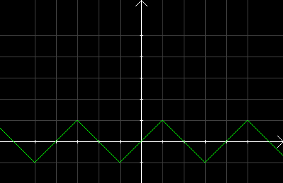

| Choisissez votre langue ! | Choose your language ! |
On considère la fonction numérique f définie sur tout ℝ par les conditions suivantes:
- f est affine par morceaux
- f est impaire
- f(0)=0
- f(1)=1
- f(2)=0
- f admet 2 pour antipériode
- Calculer f(x) pour x∈[0,1].
- Calculer f(x) pour x∈[1,2].
- Calculer f(x) pour x∈[2,3].
- Calculer f(x) pour x∈[3,4].
- Tracer la représentation graphique de f.
aide
Résoudre des systèmes en a et b de la forme y=ax+b, en exploitant les données pour x ∈[0,1] et x∈[1,2]
Traduire ensuite l'antipériodicité.
Compléter la représentation graphique par périodicité à partir du graphe sur [0,4].
solution
- f(x)=x
- f(x)=-x+2
- f(x)=-x+2
- fx)=x-4
-

We consider the numerical function f defined on all ℝ by the following conditions:
- f is piecewise affine
- f is odd
- f(0)=0
- f(1)=1
- f(2)=0
- f admits 2 for antiperiod
- Calculate f(x) for x∈[0,1].
- Calculate f(x) for x∈[1,2].
- Calculate f(x) for x∈[2,3].
- Calculate f(x) for x∈[3,4].
- Draw the graphical representation of f.
hint
Solve systems in a and b of the form y=ax+b, using the data for x ∈[0,1] and x∈[1,2]
Then translate the antiperiodicity.
Complete the graphical representation by periodicity from the graph on [0,4].
solution
- f(x)=x
- f(x)=-x+2
- f(x)=-x+2
- fx)=x-4
-
|
Création Gilles Dubois
Created by Gilles Dubois
|
Janvier 2022
January 2022
|
Version mobile Jquery
Mobile Jquery version
|
|